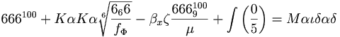

De: La Frikipedia, la enciclopedia extremadamente seria.
De: La Frikipedia, la enciclopedia extremadamente seria. De: La Frikipedia, la enciclopedia extremadamente seria.
| |
Hay frikipedistas que creen que este artículo debería ser fusionado con Satán. |
|---|
| De la serie animales y otros bichejos: | ||
| ||
| Nombre común: | Demonio o Diablo | |
| Nombre científico: | Dih-ahb-lho | |
| Especie: | Demoniaca malvada | |
| Subespecie: | Malvada | |
| Alimentación: | Pitufos y emos | |
| Apariencia: | La de una cabra atropellada por el Papamovil | |
| Hábitat natural: | El inframundo, las Iglesias y los supermercados en días de oferta | |
| Localización: | En su cuarto fumando porro junto a Bob Marley y flia | |
| Número aproximado de ejemplares: | Un chingamadral, pero este es el mas juerte | |
| Fecha de extinción: | ¡Jamás! | |
| Pokemonización: | Se convierte en un elemento químico llamado Cabrono | |
«悪魔醜いです私と板井hemorrorroides»
~ alguien acerca del Demonio y su problema de hemorroides
El Demonio es la bestia cuernuda y fea encargada de sodomizar a los emos en el inframundo. Fue el único amigo de Jesús de Neanderthal Y su nombre se designa con este vocablo perteneciente al Cingalés-kurdo-serbo-croata que proviene del vocablo Dih-ahb-lho que viene a significar algo a así como: el que puede matar cabras a pollazos. Este sujeto es utilizado por los padres con hijos de edades tiernas, de 2 a 42 años (depende del hijo en cuestión), como receptor de mensajes subliminales tras alguna chapuza que ha hecho el hijo. Es adorado en la tierra por cristianos, frikis y cantantes de Heavy Metal los cuales se dan a la tarea de grabar mensajes ocultos en sus canciones para que nadie les entienda una mierda. Se rumora que apesta a mierda de puerco y tiene el poder sobrenatural de apoderarse del cuerpo de cualquier humano. En la actualidad el demonio y sus aliados (los jebis) se dedican a posesionarse de cuerpos mortales para luego obligarlos a cometer actos de sexo desenfrenado contra y la humanidad en general.
El caso es que ese diablo era antes un ángel, pero el Monstruo macarrón volador le convirtió en un ángel caído aunque más bien arrecostao del cielo. Por un día en que se le puso chulo al de arriba, este lo mando directamente al infierno; lugar en el que lleva regentando desde que el puto mundo es mundo y puto. Hace un calor que te cagas, y encima la Gente que va, suele pillar bastante. Los únicos intocables en el infierno son zerkc dios del infierno y los cantantes de Heavy Metal, estos se encargan de que los emos sufran de manera inhumana con el repertorio de máquinas de tortura que Don Sata les presta a cambio de mencionarle en sus canciones.
Hay una serie de cosas que al diablo le gustan, pero al de arriba no, y que si se hacen garantizan una entrada más o menos sonada en el mundo de las tinieblas.
Del Demonio se sabe muy poca cosa, aunque se puede deducir su tamaño, teniendo en cuenta que se dice "Jesús" tras un estornudo para evitar que el diablo entre por la boca abierta tomando posesión del cuerpo del desgraciado y convirtiéndolo en un energúmeno, podemos establecer una cota superior para el tamaño del diablo.
Considerando que el que los orificios dela nariz estén continuamente abiertos no entraña peligro para posesiones demoníacas, podemos establecer una cota inferior. (Otra teoría es que lo follan por la nariz).
Mediante este sencillo razonamiento se obtiene que el diablo (y por extensión, ángeles y arcángeles) tiene un tamaño semejante al de un pitufo.
Se especula que es hijo de un ángel travesti y una cabra transexual del monte, dicen que luego de unas horas de parto la cabra puso un huevo gigante de avestruz el cual tuvo que ser empollado por un rinoceronte ciego durante unas 2 o 3 eternidades, al romperse el huevo nació una especie de cabra tuerta y cuernuda Llamado(a) Demonio.
Después de la Empollación, el rinoceronte ciego se da cuenta que no tiene plata pa mantenerlo, entonces lo deja a la deriva en un Internado de monjas sadomasoquistas al norte de Afganistán donde se encargan de perturbar la mente de los desgraciados obligándolos a escucha a “Daddy Yankee” y “DJ polla mutante” varias veces al día. Tras varios años de maltrato auditivo el demonio se vuelve PENDEJO retardado, para luego ser adoptado por “Doña Teofilita”, la dulce abuelita de Marilyn Manson, educándolo a base de metal, Black Metal y Heavy Metal, redescubriendo así el amor del demonio hacia las drogas y el alcohol etílico del 91.
Al cumplir la mayoría de edad (42 años) Es donde al Demonio entra en un estado de depresión emocional y se le ocurre meter la cabeza al triturador de basura, algunos dicen que para suicidarse otros que la metió pa sacar un pitufo que se le coló del almuerzo pero solo el sabe ¿no?. Luego decide formar un grupo de Rock-Emo llamado Te Follo en la Disco pero no charcho mucho que digamos ya que los demás integrantes de Te follo en la Disco se cortaron las venas y se murieron al poco tiempo de lanzar su primer disco.
Tras su fracaso en el mundo del espectáculo decidió junto con Jesús de Neanderthal (su único amigo en el mundo) dedicarse a predicar la palabra del “Monstruo de espagueti volador” y por las tardes se divertían enseñándole sus cosas y por cosas me refiero a sus “genitales” a niños y ancianos en los parques públicos de Nosedonde, hasta que el demonio se enfado de la pestilencia de Jesús de Neanderthal (decían que no se bañaba) y decide matarlo de un pollaso en la cabeza.
En la actualidad el demonio y sus aliados tienen un plan para acabar con la humanidad, posesionándose del cuerpo de diversos pendejos para que después esos pendejos inventaran el reggaetón, luego el reggaetón dejaría estúpidos a los demás humanos y los estúpidos humanos se morirían luego de parálisis cerebral, embolias y demencia senil tras escuchar esa mierda.

Formula solo apta para mayores de edad, ateos y herejes en desarrollo…
A lo largo de los tiempos, la humanidad se ha hecho cuestionamientos sobre el saber universal acerca del diablo y sus hábitos y el porque de las cosas, a continuación se les dan respuesta a algunas de esas interrogantes que han aquejado el saber frikipedico a lo largo de los tiempos:
Claro que existe imbécil, de lo contrario no existirían los maricones, los regetoneros, los emos, McDonald’s y Hasefroch.
No, simplemente ha sufrido mucho a lo largo de su vida, lo cual le da el derecho divino de torturar a los emos con toda clase de artefactos sodomizadores posibles, por ejemplo el CONALEP (clase de instituto creado para la tortura Emo).
Por supuesto, esta comprobado que La Pasión de Cristo II.
Por supuesto que si, ya que tiene la capacidad de pokemonizar en Cabrono uno de los elementos mas respetados en la tabla periódica. El Demonio era un Pikachu y evolucionó a Raichu y Jesucristo es un Power Ranger de la ostia.
Por que de no ser así estarías dudando del trabajo de los frikipedicos que se han dado a la tarea de investigar el tamaño del diablo. Pues si es enano, ¿es que no has oido nunca enano pero matón?.
2. La posesión del gato de Chuck Norris
4. Imágenes de la primera posesión colectiva a pitufos en su habitad natural

6. La posesión de este tipo, del cual no recuerdo su nombre...
7. El mismo de a lado pero Invertido...
8. Teletubbies poseídos por Lucifer, Satan y Bill Gates en conjunto
AFICIONES:
Es adicto al sexo, alas papatinas y ala salsa E entertaiment television,sosteniendo una fobia hacia egresados y actuales contribuyentes a organizaciones como fotolog ya que siente un profundo sentimiento d exclusion , aficion por el metal, ya que no sabe ni lo que hace.
Que Diox te ayude , por que dios esta jugando ajedrez con el diablo.
Autor(es):